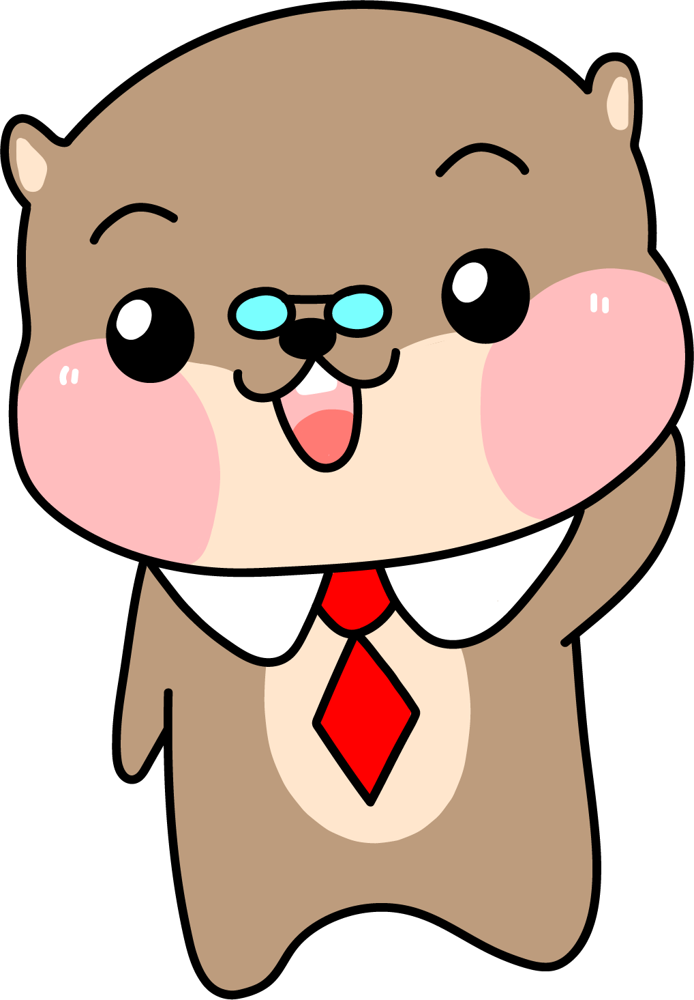

아이디어 발상 도우미 챗봇
A - h a


아이디어 발상 도우미 챗봇
아이디어가 떠오르지 않을 때는
아하와 함께 생각해 보아요!
아하는 아이디어 기획이 어려운 당신을 위해
6가지의 아이디어 발상법을 제공합니다.

객관적 / 중립적 사고
개인적인 감정을 포함하지 않은 사실만을 다룬다.
정서적 사고
본인이 느끼는 감정을 표현한다.

긍정적 사고
장점만 생각한다.

비판적 사고
단점만 생각한다.

창의적 사고
새로운 것, 더 나은 것, 가능성을 생각한다.
객관적 / 중립적 사고
개인적인 감정을 포함하지 않은 사실만을 다룬다.
일단 임의의 단어를 선택한다.
그리고 10분간 그 단어를 사용한 문장들을 최대한 길게 작성한다.
시간이 지나면, 그 문장들을 시작으로 얼토당토 않은 아이디어를 뽑아내고
그 아이디어를 바탕으로 실현 가능한 솔루션을 생각한다.
누가 (who)?
무엇을 (what)?
언제 (when)?
어디서 (where)?
왜 (why)?
어떻게 (how)?
이 여섯가지 질문들에 대답을 찾아봄으로써 영감과 아이디어를 얻는다.
단, Why라는 질문은 조심해서 사용하자.
가장 자주 묻는 질문이기도 하지만 제일 쓸모 없는 질문이기도 하다.
대체(Substitute), 결합(Combine), 개조(Adapt), 수정/확대/축소(Modify/Magnify/Minify),
Put to other uses, Eliminate, Reverse/Rearrage 의 약자이다.
- Substitute: 사람, 장소, 시간이나 상황들을 다른 것으로 대체해본다.
- Combine: 여러 가지 다른 요소들을 더하고 섞고 통합해본다.
- Adapt: 기능을 변경하거나 다른 요소를 사용하는 등 아이디어를 개조해봄
- Modify: 스케일을 줄이거나 늘려보고, 모양을 바꾸어보거나 색깔 등의 특성을 수정
- Put to other uses: 일부분의 사용법을 대체해봄
- Eliminate: 일부 기능이나 요소를 제거해본다 - Rearrage/Reverse: 요소들의 순서를 바꾸거나 앞뒤, 위아래를 바꾸어본다.
아이디어와 연관 없어 보이는 것들로 은유적 생각을 해본다.
예를 들어 냉장고와 고양이의 공통점? 이라면
둘 다 생선을 속에 넣고, 둘 다 꼬리가 있고, 둘 다 그르렁 거리고 둘 다 다양한 색이 있으며, 둘 다 수명이 15년 정도...
공통점을 찾는 방법으로 생각을 확장시킬 수 있다. 우리는 낯선 것들을 이해할 때 이미 알고 있는 것들과 비교한다.
최초의 자동차는 '말없는 마차 (horseless carriages)'라고 불렸고 초기 기차들은 '철마 (iron horses)'라고 불렸다.
은유(Metaphor)는 여러 문제나 상황에 새로운 영감을 줄 수 있다. 현재 이슈에 대해 어떤 metaphor를 만들 수 있을까?
라는 질문을 해보자.
너무 웃겨서 한달동안 웃음을 멈출수 없는 농담을 상상해 보자. 강철보다 강한 종이, 호털 크기의 사과,
나방의 날개짓보다 조용한 제트엔진, 집에서 준비하는 25,000 명을 위한 요리등 당신의 아이디어를 과장해 보자.
크게 생각해보자. 만약 천배로 커진다면? 시끄러워 진다면? 단단해 진다면? 빨리진다면?
밝아진다면? 만약 그것을 사용하는 사람들이 천배로 늘어난다면?
이제는 작게 생각해보자. 만약 천분의 일로 약해진다면, 느려진다면, 싸진다면 혹은 단순해 진다면?
당신의 아이디어를 과장해보자.